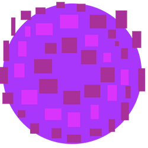

Pixel Jump
Descripción
Pixel Jump consiste en avanzar por un mapa evitando obstáculos. Perderás la partida si tu personaje toca frontalmente cualquier obstáculo o se cae encima de un pincho. El personaje cambia de modo al atravesar portales como estos:
Los modos de juego son block, spaceship y spider, en el primer modo de juego el personaje únicamente puede saltar y cualquier colisión que no sea con un suelo supondrá el final de la partida. En el modo nave espacial el jugador se mueve en el aire con el objetivo de evitar obstáculos suspendidos. Por último en el modo araña el personaje puede alternar su posición entre el suelo y el techo del mapa para saltar objetos más largos.
Otra mecánica presente en el juego es la de Spring o muelle. Cuando el jugador (en modo bloque) interactúa con este objeto, adquiere un salto adicional de forma que podrá elevarse en el aire. Para interactuar con este objeto el jugador ha de saltar en el momento justo, sino lo atravesará sin realizar la mecánica.

El juego consta de tres niveles que aumentan la dificultad progresivamente, siendo el primero de ellos un tutorial. Para aprender a jugar el tutorial se pausa con una pequeña explicación para permitir al jugador aprender las mecánicas de forma sencilla.
HUGO HERRERO GOMEZ-POMPA
Responsable del JavaScript Juego
Estudiante grado en Ingeniería de Sonido e Imagen, UC3M
100429263@alumnos.uc3m.es
CRISTINA DE LA MORENA VICENTE
Responsable del JavaScript de la página, del CSS y del HTML
Estudiante grado en Ingeniería de Sonido e Imagen, UC3M
100383522@alumnos.uc3m.es
CAROLINA CARPIO ORTEGA
Responsable del JavaScript de la página, del CSS y del HTML
Estudiante grado en Ingeniería de Sonido e Imagen, UC3M
100363749@alumnos.uc3m.es
JORGE ORTIGOSO NARRO
Responsable del JavaScript Juego
Estudiante grado en Ingeniería de Sonido e Imagen, UC3M
100429257@alumnos.uc3m.es
Multimedia
Responsabilidades
CSS y HTML: Carloina y Cristina.
JavaScript: Jorge y Hugo
Técnicas y tecnologias utilizadas
Para el desarrollo del código HTML hemos desarrollado un esquema de la página basado en secciones. La sección principal es la sección de Inicio enlaza directamente con el Juego, mientras que el resto de secciones estan dedicadas a los autores, desarrollo, descripción, refernecias y multimedia. Para ir a la página de inicio se puede pulsar el logo del juego. Para poder hacer visible e invisible estas secciones accedemos a ellas a traves del DOM de la página y cambiamos sus etiquetas para aplicarles el estilo CSS que queremos en cada momento.
En el desarrollo del código CSS hemos trabajado a partir de una paleta de colores, selectores y pseudoclases para dotar de estilo a la página. Para añadir dinamismo hemos trabajado con secuencias animadas y keyframes para el título de la página.
Problemas y dificultades
Debido a la naturaleza de nuestro juego, necesitábamos poder implementar todas las entidades de forma modular para poder crear un nivel de forma sencilla y compatible con diferentes modos de juego. Para ello usamos una implementación basada en objetos entidad, clase de la cual heredan todos los objetos del juego, esto nos facilita mantener una lógica global y evitar reciclar código. La orientación de objetos en javascript no hacía que esto fuera muy cómodo de implementar debido a su modelo de prototipos, por eso decidimos programar con ECMAScript6 que permite crear clases y objetos de la misma manera que en Java.
En cuanto a la lógica del juego el principal problema que nos encontramos fue la lógica de colisiones. Al no estar definidos los niveles en el momento del desarrollo necesitamos que las colisiones sean detectadas para cualquier bloque genérico, de esta forma se puede diseñar el nivel con total libertad. Esto suponía un problema ya que al haber diferente tipo de objetos habría que hacer poliformismo en los métodos de colisión, al final ajustamos la hitbox de cada bloque en función de su tipo manteniéndola cuadrada para evitar hacer código excesivamente complejo. Toda la lógica del juego corre dentro de un objeto enviroment que incluye la inicialización del canvas y su configuración, lo que se inserta en la página de forma dinámica para poder pausar el entorno en cualquier momento, hacemos uso de varias formas de esta posiblidad como en el menú o en el tutorial.
Otro problema que apareció fue la reproducción de elementos multimedia. Para poder reproducir música de fondo en los niveles era necesario activarla mediante un evento de usuario, así que aprovechamos esta necesidad para crear un menú html/css que lanzara estos eventos al pulsar los botones de juego en cada nivel. La música se pausa y reinicia con otros eventos de menú. Para controlar globalmente la reproducción usamos una variable global que se comprueba siempre que se intenta reproducir audio.
Puntos fuertes
El principal punto fuerte es la flexibilidad del juego a la hora de crear niveles, ya que todo está estandarizado.
Planificación
Para afrontar este trabajo hemos decidido repartirnos las tareas y trabajar por separado para más tarde juntar todo el código en las semanas finales. Durante las primeras semanas Hugo y Jorge se han centrado en el desarrollo del juego mientras que Cristina y Carolina se han centrado en la página web y el estilo. Para la semana del 11 de Abril, tenemos terminado cada parte y hemos juntado todo el código para comprobar que todo funciona como deseamos.
Esfuerzo estimado a priori, y el trabajo real
| Trabajo | Estimado | Real |
|---|---|---|
| HTML | 5h | 7h |
| CSS | 7h | 10h |
| JavaScript | 10h | 38h |
Referencias
https://www.w3schools.com/graphics/tryit.asp?filename=trygame_image
https://www.w3schools.com/graphics/canvas_clock_hands.asp
https://www.w3schools.com/graphics/game_intro.asp
https://www.w3schools.com/graphics/tryit.asp?filename=trygame_default_gravity
https://www.w3schools.com/jquery/default.asp
https://www.w3schools.com/jquery/jquery_get_started.asp
https://jquery.com/download/
https://www.geeksforgeeks.org/how-to-change-the-id-of-element-using-javascript/
https://api.jquery.com/append/
https://www.w3schools.com/jquery/jquery_dom_set.asp
https://www.youtube.com/watch?v=4q2vvZn5aoo
https://www.reddit.com/r/javascript/comments/4b2rxn/basic_game_menu/
https://stackoverflow.com/questions/29276145/game-menu-html-jquery
https://developer.mozilla.org/es/docs/Web/HTML/Element/audio
https://medium.com/@ericschwartz7/adding-audio-to-your-app-with-jquery-fa96b99dfa97
https://forum.jquery.com/topic/detect-if-html5-audio-is-playing-using-jquery
https://www.w3schools.com/jsref/dom_obj_audio.asp
https://www.youtube.com/watch?v=lGJ9i6CYKyQ&t=677s
https://es.ccm.net/contents/157-como-posicionar-elementos-en-css
https://www.creativosonline.org/menu-html-css.html
https://developer.mozilla.org/es/docs/Web/CSS/@keyframes